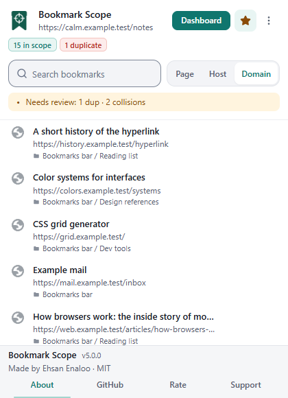
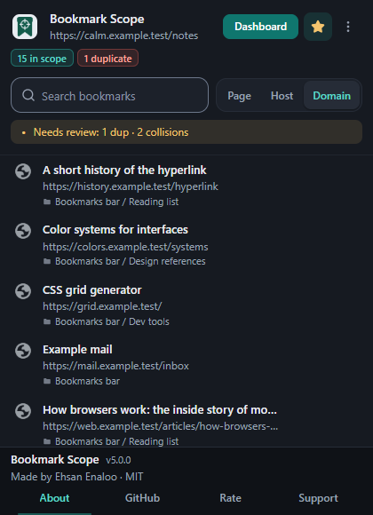

What the popup shows#
- Header
- The Bookmark Scope name and the address of the current tab. On a page that cannot be matched it says Unsupported page.
- Dashboard button
- Opens the library dashboard in a new tab.
- Star button
- Bookmark current page or Remove bookmark, depending on whether this exact address is already bookmarked. It is disabled on unsupported pages.
- More controls menu
- Open settings, Open Chrome bookmarks, About, plus the sort order, colour palette and theme controls.
- Status pills
- N in scope, and when relevant N old and N duplicate (duplicate groups). Hover a pill for its explanation.
- Search box and scope switch
- The search filters only the bookmarks in the current scope. The Page / Host / Domain switch changes the scope.
- List
- Up to eight bookmarks. If there are more, the popup says Showing 8 of N and points you to the dashboard.

Scope: page, host or domain#
The scope decides which saved bookmarks count as “this site”. The default is Domain; change the default under Settings → Default mode. Switching scope in the popup is remembered.
| Mode | Two bookmarks match when… | Details |
|---|---|---|
| Page | Their normalised page address is identical | Protocol, host (with a non-default port), path and, depending on your settings, query and fragment must agree. |
| Host | Their host name is identical | docs.example.com and example.com are different hosts. Ports are ignored in host mode. |
| Domain | Their registrable domain is identical | Computed with the Public Suffix List packaged inside the extension, so example.co.uk is treated as one site and two github.io project sites are not. |
How strictly a “page” is compared is controlled by two options, Ignore query string and Ignore hash fragment. The details and examples are in Finding and searching.
Searching in the popup#
Type in the search box. The popup first looks for an exact match: every word you type must appear somewhere in the bookmark’s title, address or folder path, in any order, ignoring case. You can use the search operators too (for example is:duplicate); see the operator table.
If nothing matches and you used no operators, the popup falls back to fuzzy matching and says No exact matches — showing fuzzy results. Fuzzy matching accepts letters that appear in order but not next to each other (so ghb can find github.com), and ranks results by relevance: title matches count most, then the address, then the folder path. Fuzzy results keep their relevance order and ignore the sort setting.
Fuzzy matching is a popup feature. The dashboard search is exact (substring) matching.
Quick actions on a bookmark#
- Open opens the address in a new tab.
- Show in bookmarks opens Chrome’s bookmark manager on the bookmark’s folder.
- Delete asks Delete bookmark? with Delete and Keep it. The result is a toast such as Deleted: 1. Failed: 0. with Undo.
Each row can show badges: Duplicate, Old with an approximate age, Untitled and Title collision. What each means is explained in Cleaning up.
Removing the page you are on
The star looks filled only when a bookmark has exactly the same address text as the tab. If you saved the page with a different query string, fragment or trailing slash, the star stays empty and clicking it adds a second bookmark.
If the star is filled, clicking it removes every bookmark whose normalised address matches the current tab (usually just one), then offers Undo. It does not ask first, so look at the toast.
What popup Undo can and cannot do
- It recreates the removed bookmarks in the same folder and position where possible, and puts their tags back.
- It cannot restore the original browser ID or the original date added.
- If some bookmarks could not be removed, the toast reports both numbers (Deleted and Failed), and Undo covers only those that were actually removed.
- The Undo is kept only while the popup stays open. Closing the popup ends it.
The toolbar badge#
The number on the toolbar icon is the count of bookmarks in your popup scope for the active tab. It disappears when the count is zero or the page is unsupported, and is capped at 999. It updates when you switch tabs, finish loading a page, or change bookmarks.
The right-click menu#
Bookmark Scope adds three entries to Chrome’s context menu:
| Where you right-click | Menu entry |
|---|---|
| Anywhere on a page | Show all bookmarks of this domain |
| Anywhere on a page | Find duplicates of this page in bookmarks |
| A link | Find duplicates of this link in bookmarks |
Each entry opens the dashboard with a hint about the address you chose.
The dashboard opens already narrowed to the address you chose:
- Show all bookmarks of this domain opens the dashboard in domain scope: only bookmarks on that registrable domain are listed.
- Find duplicates of this page/link in bookmarks opens it in page scope with the Duplicates filter on, so you see only bookmarks of that exact page that exist more than once.
The scope is not shown as a chip. The count line (for example 3 shown · 3 total) reflects the narrowed list, and the header still says how many bookmarks the library has. To return to the whole library, open the dashboard again from the popup or reload it without the link. While you are in a scoped dashboard, the keys 1, 2 and 3 switch between page, host and domain scope of that same address.
Popup limits#
- The popup is scoped to the active tab’s address. There is no way to browse the whole library from it, by design.
- It shows at most eight rows. Use the dashboard for the rest.
- The popup does not edit titles or tags. Use the dashboard.
- The popup sort control offers Title, Newest, Oldest and URL. A fifth option, Folder path, exists only as a default in Settings.